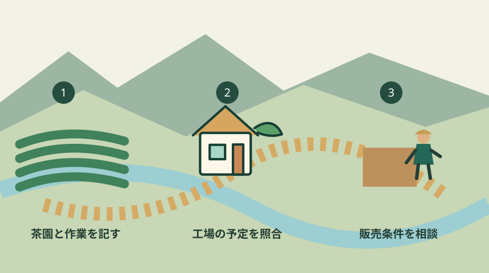

森町の有機茶転換｜栽培より先に経営体制を確認
／ 農地・山林・茶畑
Q. 有機茶に変えるなら、最初に何を確かめればいい？
A. 森町で有機茶への転換を検討するなら、除草・摘採・製造・販売を誰が担うか、茶園ごとに確認します。静岡県の2026年1月29日の研究会は、栽培技術に加えて安定生産の体制を扱いました。転換の可否や収益は個別条件によるため、作業表を作り、工場や技術の相談先と照合するところから始めます。
茶園を守る仕事の上に、転換の段取りを重ねる
森町の茶園を維持するには、摘む日以外にも仕事があります。草を抑え、道を通れる状態にし、機械を整え、製造の時間に合わせて運びます。今の作業を回している生産者やご家族の負担を、転換という言葉で小さく扱いたくありません。新しい栽培を考える出発点は、その仕事を見える形にすることです。
大石浩之（磐田市／不動産業）です。この記事は森町で有機茶を検討する茶園側の準備を扱います。有機栽培の技術指導や認証の判定をする記事ではありません。土地と担い手の条件を整理し、工場や専門の相談先へ何を持っていくかを考えます。
確認日は2026年10月15日です。主な資料は、静岡県中遠農林事務所の「令和7年度 第3回中遠地域有機茶研究会」の報告です。開催済みの会合から判断材料を読むのであり、これから参加できる研究会として案内しているわけではありません。
茶園を受け継ぎ、今の管理自体が定まっていない持ち主の方は、茶園を続けるための条件整理から確認できます。本記事では、その先の有機茶への転換に話を絞ります。名義上の持ち主と、日々の作業者が同じかどうかも、最初の確認事項です。
研究会報告｜技術だけでなく安定生産の体制を扱う
静岡県の報告によると、研究会は2026年1月29日に開催されました。会場は磐田市の中遠総合庁舎です。森町内で開かれた会合とは区別します。ページの表示更新日は2026年2月6日で、会合の日付とは異なります。初回公表日は本文からは確認できません。
内容には、有機栽培茶を安定して生産する経営体制、実際の取組事例、県の栽培マニュアルの紹介が並びます。栽培技術と生産する仕組みの両方を扱った報告です。この記事は講演録ではないため、講師が述べた具体的な経営手法まで推測して紹介しません。
出席者は38名で、そのうち茶生産者は14名と記録されています。38名全員が生産者という数字ではありません。この人数から、森町の有機茶の生産者数や転換希望者の総数は分かりません。研究会の参加実績を町全体の普及率に置き換えないでください。
私は、安定生産のための体制が研究会の主題に入っている点を、見落としたくありません。畑で方法を学ぶことと、その方法で毎年仕事を続けることは別の課題です。意外に見えるかもしれませんが、最初に作る紙は資材の買物表より、誰が何をするかの作業表だと考えます。
報告の本文だけでは、個々の茶園に必要な除草の回数、人数、転換費用は分かりません。掲載されたテーマを、一定の収益が見込めるという保証には使えません。技術の適否と、家族や雇用を含めて実行できるかを、別々の欄で確かめます。
茶園側の準備｜一筆ごとに作業と進入路をそろえる
有機茶への転換準備では、茶園の場所と作業の担当を一筆ごとに対応させる整理が役立ちます。ここからの手順は私の提案です。地番、現在の利用者、進入路、機械を置く場所を一枚に書きます。住所だけでは離れた茶園を取り違えることがあるため、地図も添えます。
除草は「家族でやる」と書いて終えず、作業を引き受ける人と動ける時期を書きます。特定の除草方法をこの記事で勧めるものではありません。今の作業時間を本人の記録で確かめ、転換後の方法は技術の相談先に聞きます。必要時間を想像だけで埋めないことが先です。
摘採と運搬も、別の仕事として整理します。摘む人が運搬まで兼ねるなら、その人が茶園を離れる時間があります。工場の受入時間が合わない場合は、栽培方法だけを決めても流れが止まります。誰かが休んだ日の代わりを、家族の善意だけに任せない形で話しておきたいところです。
森町の「農業経営基盤強化促進法に基づく地域計画について」は、将来の農地利用を目標地図とともに示しています。町のページでは、農地一筆ごとの10年後の耕作者を示す地図と説明しています。地域計画は有機認証の名簿ではなく、土地を誰が利用するかを考える別の資料です。
私は、茶園の借入れや引継ぎを伴う場合に、目標地図の情報と当事者の意向を照合する段取りを勧めます。図に名前があることだけで、貸借契約や相手の承諾が済んだことにはなりません。面積を増やす前に、今ある茶園を誰がどの条件で使っているかを一つ確認します。
良い点｜茶園・製造・販売を同じ話合いに載せられる
静岡県の研究会報告の良い点は、技術の紹介だけで終わらず、経営体制を議題にしていることです。私は、茶園で努力する人だけに結果の責任を寄せない入口として評価します。工場の稼働や売り先の条件まで話題にしなければ、安定生産という言葉は現場の段取りに届きません。
取組事例とマニュアルが同じ会合で紹介されている点も、確認を進める手掛かりになります。経験の話をそのまま自園へ当てはめず、技術資料のどこを見ればよいかを質問できます。地域、設備、人数が違えば条件も変わるため、成功した形を丸ごと借りるより違いを並べる使い方がよいと考えます。
製造を外部へ頼む場合は、工場へ早い段階で相談する余地があります。私は、受入れ可能かを聞く際に、茶園の場所、予定する量、摘採時期の見込みをそろえたいと考えます。まだ数量が確定しない欄は「未定」と書き、何が分かれば見積もれるかを教えてもらう形です。
販路まで視野に入れる方には、茶の輸出生産拠点と茶工場の参加条件も関連します。ただし、輸出の枠組みと有機茶への転換は別の問いです。有機栽培に変えるだけで輸出の条件が満たされる、という説明にはできません。
注文したい点｜担い手不足と販売の不確実さを別に残す
有機茶の研究会報告だけでは、森町の個別の茶園に誰が入れるかまでは分かりません。私は、次に相談できる窓口と、茶園側で準備する作業表が一緒に示されると助かると考えます。講演を聞いて知識が増えることと、来季の担当が決まることには距離があるためです。
私自身、どの段階なら転換へ進んでよいかを、全ての茶園に共通する線で示せるとは思っていません。工場の受入れが決まっても除草の担い手が未定なら、判断は残ります。反対に人手を確保しても販売条件が分からなければ、作業を増やす負担を家計が支えられるかは判断できません。
森町はJA遠州中央ときめきアグリワーク無料職業紹介所を案内しています。町の説明では、求人票の提出、求職者の紹介、面談などを経て採用へ進みます。人手を探す窓口の一つですが、有機茶の経験者がすぐ紹介されるとか、必要な人数が集まるという保証ではありません。
私は、求人の前に作業内容、場所、日程、必要な技能を分けておくほうが、紹介先にも説明しやすいと考えます。町の案内は2019年更新なので、現在の受付方法はJAへ確認します。森町の農家が求人を出す手順では、この準備を別に整理しています。
販売についても、希望単価と相手が示した条件を混ぜないようにします。必要な品質、数量、納期、確認にかかる費用を、工場や販売先へ質問します。この記事で有機表示の可否や認証要件は判定しません。表示や認証に関する手続きは、専門の確認先へ別途照会する事項として残します。

対案・結論｜今日、空欄のある担当表を作る
有機茶への転換を考える生産者が今日できる一歩は、茶園を一つ選び、作業と担当の対応表を作ることです。私は、除草、摘採、運搬、製造、販売、記録の欄を勧めます。全部を埋めることが目的ではありません。決まっていない仕事がどこにあるかを、工場やご家族と共有するための紙です。
表には、担当者の名前に加えて、確認した日と未定の理由を記します。「家族に相談前」と「工場の回答待ち」は、同じ未定でも次にすることが違います。電話で済む確認と、現地を見てもらう相談を分ければ、相手の時間も使いやすくなります。提出書類と取り違えないよう、検討用と明記します。
工場へは、受入れの可否だけでなく、何を確認すれば具体的な相談になるかを聞きます。園地の資料が必要か、時期をどの程度絞るべきか、販売先の条件を先に聞くべきか。答えをもらったら、誰がいつまでに資料をそろえるかを決めます。相手の返答を要約だけでなく、確認日と一緒に残します。
面積を一度に切り替えるかどうかも、この記事では結論を出しません。技術的に試せる方法があるか、既存の作業と区別して運用できるかは相談事項です。私は、段階的に確認できる余地を先に探す考えです。小さく始める場合でも、認証や製造の条件が自動的に軽くなるとは扱いません。
家族に残す記録｜作業を知らない人にも読める形にする
茶園の引継ぎでは、作業をしていない家族も場所と相手をたどれる記録が役立ちます。私は、茶園の地図、利用関係、工場の連絡先、作業の予定を一組にする形を提案します。土地の資料と栽培の資料を結び、どの茶園の話か分かる状態を目指します。
借りている茶園なら、貸している相手と契約内容を確認します。有機栽培を考えたことだけで、利用条件が変わるわけではありません。進入路や水の利用を含め、分からない点は当事者へ照会します。口頭の了解と、書類に書いてある条件を、同じ確定事項として記録しないことが必要です。
費用の欄は、資材、外注、人を頼む費用、運搬、製造、販売に分けます。実際の見積りがない項目は未確認と書きます。私は、売上予測だけを一枚にしても継続の判断には足りないと考えます。支払う時期が重なる月まで見えると、家計と事業の相談が具体的になります。
記録を作るために専用の道具を買う必要はありません。紙でも表計算でも、担当者以外が読める方法を選びます。私なら、今日の時点では一園地分だけを完成させます。全園の資料を探す途中で止まるより、実際に使える一枚を作ってから同じ形式を広げるほうが、確認を前へ進められます。
大石の視点｜栽培より先に、続ける担当を確かめる
私はこう考えます。有機茶への転換は、方法の選択と同時に、仕事を引き受ける体制の選択です。誰が草を取り、誰が工場と連絡し、誰が売り先への説明を担うのか。この欄が空いたままでは、栽培方法の話だけ先に進めません。茶園を守る人の時間を、足りなくなったら家族が補う前提にしたくありません。
私は不動産の仕事をする立場から、土地が使えることと事業が続けられることを分けて考えます。茶園の名義や進入路が整っていても、作業者の予定は別に必要です。この段落は実際の相談事例の紹介ではなく、私の判断の置き方です。体験した出来事を装って、転換を勧める材料にはしません。
森町の可能性は、茶園だけで完結せず、製造や販売を担う相手とつながるところにもあると思います。ただ、つながりを維持する連絡や記録にも時間がかかります。担当者の善意に依存しすぎる部分は、仕事として数えたい。今日の一歩は、転換の宣言ではなく、未定の担当を一つ見つけて相談相手を決めることです。
よくある質問
研究会は今から参加できますか？
記事で扱う第3回研究会は、2026年1月29日に開催済みです。2026年10月15日時点の新たな募集としては案内していません。今後の会合や相談方法は静岡県中遠農林事務所へ確認してください。過去の出席人数は、現在の会員数や森町の生産者数を示すものではありません。まず検討中の茶園と質問を整理します。
転換すると利益が増えますか？
研究会報告から、個別の茶園の利益増加は確認できません。除草や運搬、製造、記録にかかる時間と費用、売り先の仕様や価格を別に確かめます。有機栽培への転換と、表示・認証の条件も混同しないでください。作業表と費用の未定欄を工場や技術の相談先に示し、判断材料をそろえる段階から始められます。
今日、何を用意すれば相談できますか？
茶園を一つ選び、場所の分かる地図と、除草・摘採・運搬・製造・販売の担当表を用意する方法があります。未定の欄は推測で埋めず、確認したい相手を書きます。借りている園地なら利用関係も照合してください。これは私の準備の提案であり、研究会や認証の正式な提出書類一覧ではありません。必要書類は相談先へ確かめます。
出典・確認日
- 静岡県中遠農林事務所：令和7年度 第3回中遠地域有機茶研究会（2026年10月確認／確認日：2026-10-15）
- 森町：農業経営基盤強化促進法に基づく地域計画について（2026年10月確認／確認日：2026-10-15）
- 森町：JA遠州中央ときめきアグリワーク無料職業紹介所の案内（2026年10月確認／確認日：2026-10-15）
最終確認日：2026-10-15。制度・数値・窓口案内は変わる場合があります。最新情報は発信主体へ確認してください。権利・登記・相続・農業技術や安全管理など、個別の判断は担当窓口や適切な専門家へご相談ください。